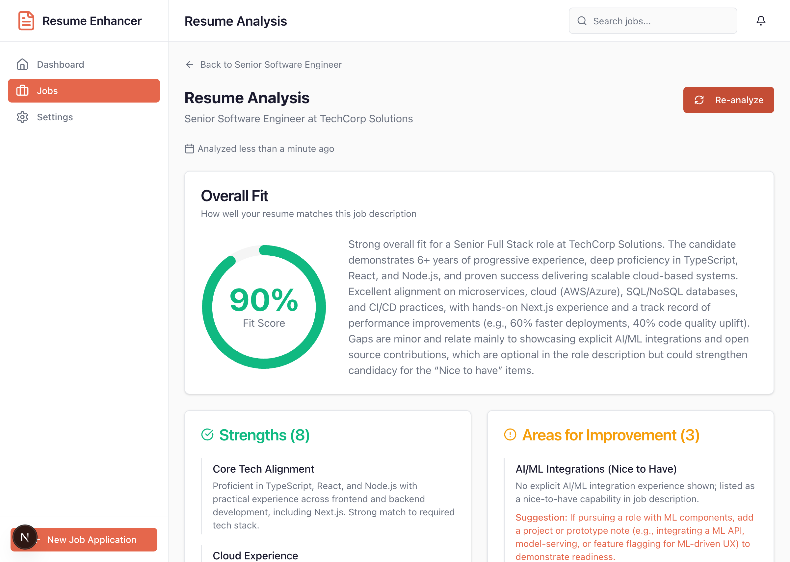
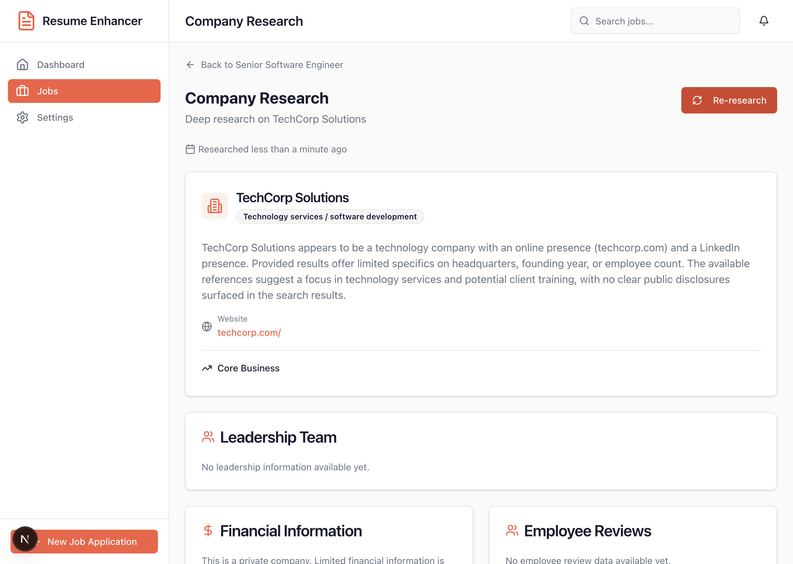
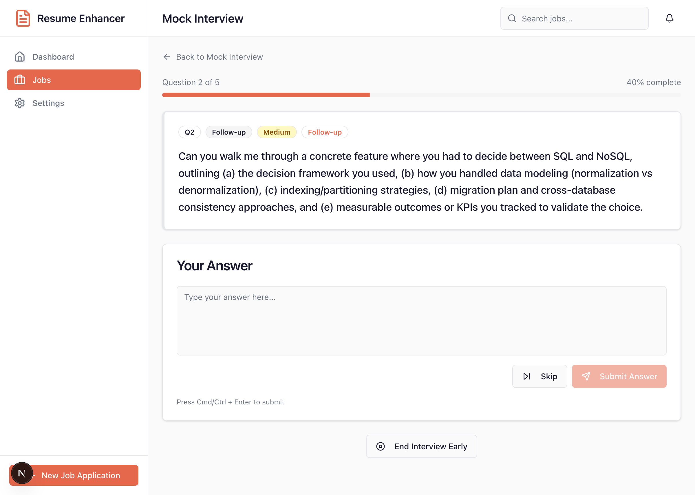
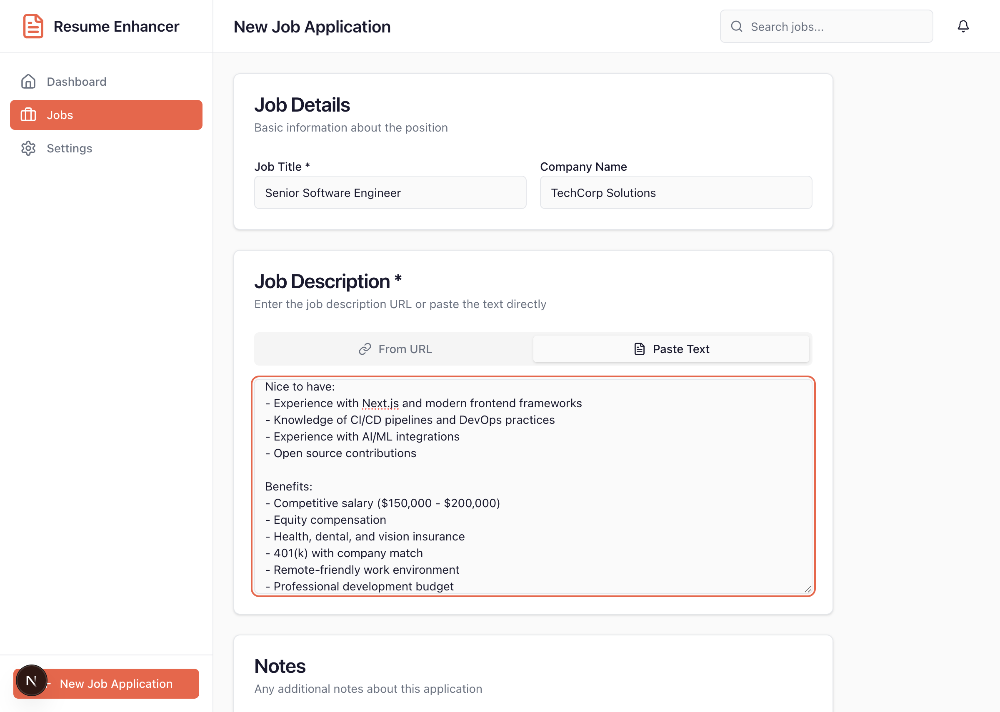
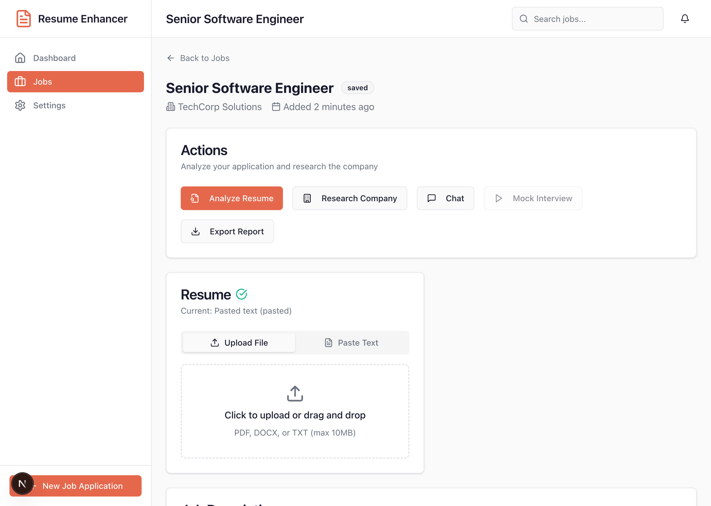

JR
Job Resume Enhancer
Leadership Status Update
January 4, 2026 | Version 1.1
Executive Summary
Job Resume Enhancer is our first internally-developed AI-powered application, designed to help job seekers analyze their resumes, research companies, and practice for interviews.
Current Status
Application is fully functional in development environment. Core features complete including resume analysis, company research, chat assistant, and mock interviews with AI feedback.
Key Achievement
Successfully integrated Azure OpenAI (GPT-5.2) with streaming responses, Brave Search API for real-time company research, and voice input/output for mock interviews.
Project Context
This is our organization's first AI-powered application built from the ground up. It serves as both a practical tool and a learning platform for AI integration patterns.
Why We Built This
- ✓ Demonstrate AI integration capabilities with Azure OpenAI
- ✓ Establish patterns for streaming AI responses
- ✓ Create reusable components for future AI projects
- ✓ Provide practical value for internal job seekers
Target Users
- ✓ Internal employees exploring new opportunities
- ✓ HR teams supporting career development
- ✓ Recruiters evaluating candidate fit
- ✓ Interview coaches and mentors
Feature: Resume Analysis
AI-powered analysis that evaluates how well a resume matches a specific job description, providing actionable improvement suggestions.
Capabilities
- ✓ Upload PDF, DOCX, or TXT resumes
- ✓ Auto-scrape job descriptions from URLs
- ✓ 0-100% fit score with breakdown
- ✓ Strengths and areas for improvement
- ✓ Before/after text suggestions
- ✓ Keyword gap analysis
- ✓ 15-20 likely interview questions

Resume analysis showing fit score, strengths, and interview questions
Feature: Company Research
Deep-dive research using Brave Search API to gather comprehensive company intelligence before applying or interviewing.
Research Categories
- ✓ Company overview and industry
- ✓ Leadership team profiles
- ✓ Financial information (revenue, growth)
- ✓ Employee reviews and culture insights
- ✓ Recent news with sentiment analysis
- ✓ Legal issues and regulatory concerns
- ✓ Ethics alignment scoring

Company research showing leadership, financials, and news
Feature: Mock Interview Practice
AI-powered interview simulation with real-time feedback, STAR method analysis, and performance tracking.
Capabilities
- ✓ Configurable sessions (5-20 questions)
- ✓ Difficulty levels (Entry to Executive)
- ✓ Category focus (Behavioral, Technical, etc.)
- ✓ Immediate or summary feedback modes
- ✓ STAR method scoring
- ✓ Dynamic follow-up questions
- ✓ Voice input/output support
- ✓ Session history and analytics

AI-powered feedback with STAR method analysis
Technology Stack
Built with modern, enterprise-ready technologies that align with our organizational standards.
N
Next.js 16
React framework with App Router
TS
TypeScript
Type-safe development
AI
Azure OpenAI
GPT-5.2 deployment
DB
SQLite + Drizzle
Local-first database
B
Brave Search
Web search API
TW
Tailwind CSS v4
Utility-first styling
Architecture Highlights
Streaming AI Responses
Server-Sent Events (SSE) for real-time AI output. Users see responses as they're generated, improving perceived performance.
Structured AI Outputs
Zod schema validation ensures AI responses match expected formats, preventing runtime errors and enabling type safety.
Component Library
55 reusable React components built on shadcn/ui patterns, ready for use in future projects.
Codebase Metrics
Current development statistics and code quality indicators.
Code Structure
| Category |
Count |
| API Routes |
14 endpoints |
| Database Tables |
13 tables |
| AI Agents |
3 agents |
| UI Components |
55 components |
| Utility Functions |
12 modules |
Quality Indicators
| Metric |
Status |
| Build Status |
Passing |
| Lint Warnings |
4 warnings |
| Test Failures |
2 failures |
| TypeScript |
Strict Mode |
| Git Commits |
8 commits |
Known Issues & Technical Debt
Code review completed on January 4, 2026. Identified 14 issues across 4 priority levels.
Critical Issues (P0) - Must Fix Before Production
| # |
Issue |
Risk |
| 1 |
No authentication on API routes |
Data Exposure |
| 2 |
Resume uploads stored in public/ directory |
Privacy Leak |
| 3 |
SSRF vulnerability in URL scraping |
Security |
Note: All 14 issues have been logged in GitHub Issues with detailed descriptions, reproduction steps, and suggested fixes.
Issue Summary (P1-P3)
High Priority (P1)
| # |
Issue |
Impact |
| 4 |
Chat session state mismatch - messages disappear on refresh |
UX Bug |
| 5 |
Uncaught JSON.parse can crash pages |
Stability |
| 6 |
Company overview UI/schema mismatch |
Data Display |
| 7 |
Test suite failing (2 tests) |
Testing |
| 8 |
React Hook dependency warnings |
Code Quality |
Medium & Low Priority (P2-P3)
| # |
Issue |
Category |
| 9 |
Duplicate metrics updates |
Data Integrity |
| 10 |
Repeated SSE parsing logic (DRY) |
Maintainability |
| 11 |
Logging noise / potential PII in logs |
Operations |
| 12 |
SQLite deployment assumptions implicit |
Documentation |
| 13-14 |
Stray files, API type validation |
Cleanup |
Development Timeline
Rapid development from concept to working application.
January 3, 2026
v1.0 Released
Core features: Resume analysis, company research, chat assistant, application tracking, PDF export
January 3, 2026
v1.1 Released
Mock interview practice with AI feedback, voice support, performance analytics, documentation with screenshots
January 4, 2026
Code Review Completed
14 issues identified and logged in GitHub. Security, stability, and code quality findings documented.
Next
Security Remediation
Address P0 critical issues before any deployment consideration
Version Highlights
v1.0 Features
- ✓ Resume upload and analysis
- ✓ Company research with Brave Search
- ✓ Chat assistant with markdown
- ✓ Application tracking dashboard
v1.1 Features
- ✓ Mock interview practice mode
- ✓ AI-powered answer evaluation
- ✓ STAR method analysis
- ✓ Voice input/output (Web Speech API)
Recommended Next Steps
Prioritized action items to move from development to production-ready.
1. Security Remediation
Priority: Critical
Address the 3 P0 security issues: add authentication, move uploads out of public/, and implement SSRF protection.
2. Stability Fixes
Priority: High
Fix test failures, resolve lint warnings, add safe JSON parsing, and fix chat session state management.
3. Code Quality
Priority: Medium
Extract shared SSE parsing logic, improve logging, add request validation, and document deployment requirements.
4. Production Planning
Priority: Future
Consider database migration (PostgreSQL), deployment platform selection, and user authentication strategy.
Effort Estimates
| Phase |
Scope |
Complexity |
| Security Remediation (P0) |
3 issues |
Medium - requires auth implementation |
| Stability Fixes (P1) |
5 issues |
Low - straightforward fixes |
| Code Quality (P2-P3) |
6 issues |
Low - refactoring and documentation |
Application Screenshots
Key screens from the Job Resume Enhancer application.

New Job Application Form

Resume Upload & Job Details

Interview Session Summary
JR
Questions?
Thank you for your time
Repository: github.com/robfosterdotnet/Job-ResumeEnhancer
Version: 1.1 | Issues: 14 tracked in GitHub
January 4, 2026